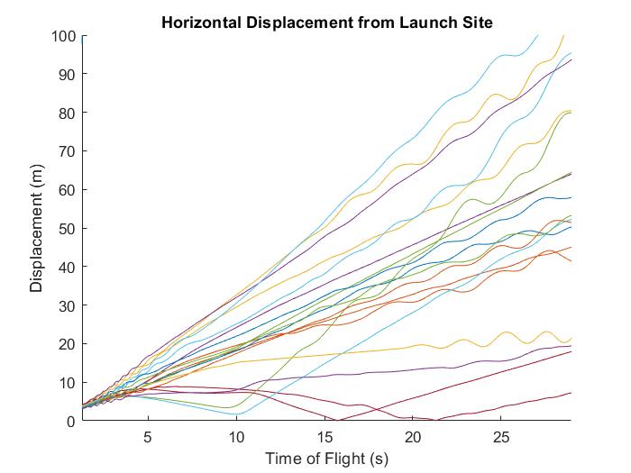
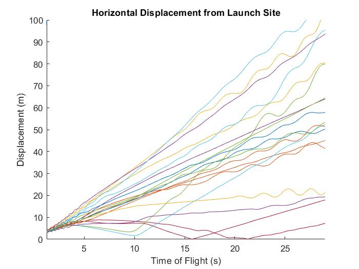
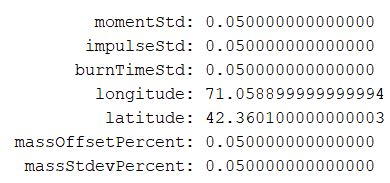
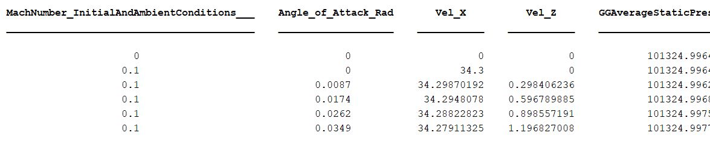
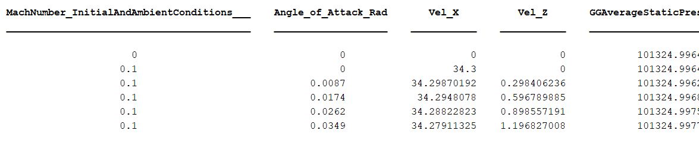

Monte-Carlo Test Flight Simulator
Validation Run (8' Rocket) Visualizing Effect of Monte Carlo Variations (20 Iterations)
 

Parameters for Monte-Carlo Iterations (Engine Burn, Atm. Pressure and Wind Conditions): 
The Base Simulation and Monte-Carlo Iterations are based off of OpenRocket Engine Thrust / Mass Data as well as CFD. These sources combine to create a 6-DOF Simulation generating data on Translational and Anglular Location, Velocity and Acceleration.
 
